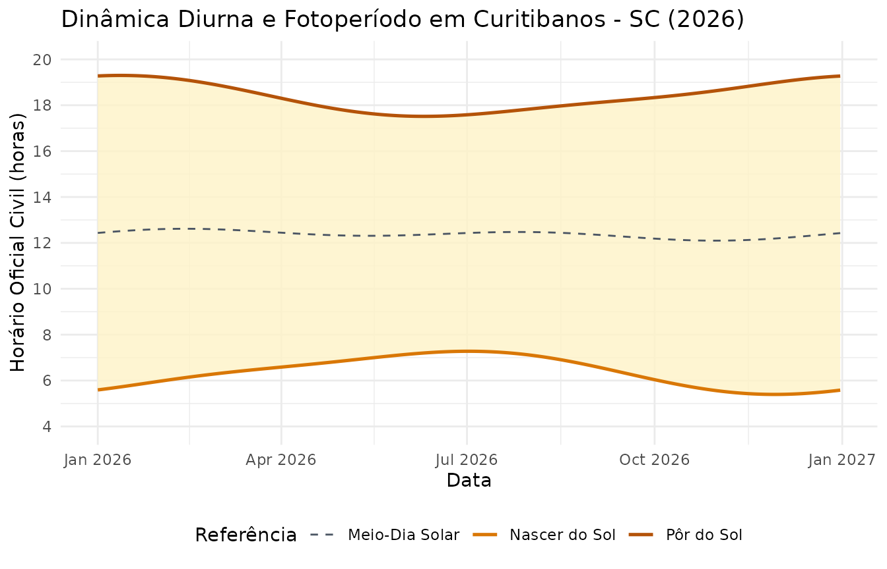

Geometria Solar e Fotoperíodo com agriclimr
João Batista Tolentino Jr.
2026-10-07
Source:vignettes/vignette_solar_pt.Rmd
vignette_solar_pt.RmdIntrodução
O pacote agriclimr disponibiliza um módulo dedicado à geometria astronômica diurna por meio das funções:
-
estimate_solar_noon(): Meio-dia solar (em hora solar local ou hora civil corrigida). -
estimate_sunrise(): Horário do nascer do sol. -
estimate_sunset(): Horário do pôr do sol. -
estimate_daylength(): Fotoperíodo ou duração astronômica do dia.
1. Fundamentos Teóricos
A posição angular do sol varia ao longo do ano em função da declinação solar (). O pacote utiliza a aproximação trigonométrica descrita por Campbell & Norman (1998) e adotada no boletim FAO 56:
Onde é o dia juliano do ano (1 a 365/366). A partir da latitude local (, em radianos) e da declinação, calcula-se o ângulo horário do pôr do sol ():
Com expresso em radianos, o fotoperíodo astronômico (, em horas decimais) é obtido diretamente por:
2. Exemplos de Uso Básico
Fotoperíodo e Horários Solares em Curitibanos - SC
Considere o município de Curitibanos, Santa Catarina (Latitude: , Longitude: , Fuso: UTC-3).
Podemos comparar os solstícios de inverno (dia 172) e de verão (dia 355):
lat_curitibanos <- -27.28
doy_inverno <- 172
doy_verao <- 355
# Fotoperíodo (horas de luz solar)
dl_inverno <- estimate_daylength(lat = lat_curitibanos, doy = doy_inverno)
dl_verao <- estimate_daylength(lat = lat_curitibanos, doy = doy_verao)
cat("Fotoperíodo no Inverno:", round(dl_inverno, 2), "horas\n")
#> Fotoperíodo no Inverno: 10.28 horas
cat("Fotoperíodo no Verão: ", round(dl_verao, 2), "horas\n")
#> Fotoperíodo no Verão: 13.72 horas3. Hora Solar Local vs. Hora Civil do Relógio
Por padrão, modelos teóricos assumem o meio-dia solar estático às 12:00 h. No entanto, quando comparamos modelos com dados de estações meteorológicas automáticas, o descompasso entre a hora do meridiano civil e a hora solar real pode alcançar dezenas de minutos.
Ao informar lon e tz, a função
estimate_solar_noon() aplica a Equação do Tempo (Spencer,
1971) e o ajuste longitudinal:
# Meio-dia solar padrão (12:00)
noon_solar <- estimate_solar_noon(doy = doy_inverno)
# Meio-dia na hora civil oficial da estação (UTC-3)
noon_civil <- estimate_solar_noon(
doy = doy_inverno,
lon = -50.58,
tz = -3
)
cat("Meio-dia Solar Local: ", noon_solar, "h\n")
#> Meio-dia Solar Local: 12 h
cat("Meio-dia na Hora Civil:", format(as.POSIXct("1970-01-01") + noon_civil * 3600, "%H:%M:%S"), "\n")
#> Meio-dia na Hora Civil: 12:23:46
# Impacto direto no horário do nascer do sol
sunrise_civil <- estimate_sunrise(lat = lat_curitibanos, doy = doy_inverno, solar_noon = noon_civil)
cat("Nascer do sol civil: ", format(as.POSIXct("1970-01-01") + sunrise_civil * 3600, "%H:%M:%S"), "\n")
#> Nascer do sol civil: 07:15:254. Comportamento Anual da Dinâmica Solar
As funções do pacote são totalmente vetorizadas, permitindo avaliar a variação de fotoperíodo e dos horários solares ao longo de todo o ano em um único passo:
# Criando a série anual de dias
df_ano <- tibble::tibble(
date = seq(as.Date("2026-01-01"), as.Date("2026-12-31"), by = "day"),
doy = as.numeric(format(date, "%j"))
) %>%
dplyr::mutate(
solar_noon = estimate_solar_noon(doy, lon = -50.58, tz = -3),
sunrise = estimate_sunrise(lat = lat_curitibanos, doy = doy, solar_noon = solar_noon),
sunset = estimate_sunset(lat = lat_curitibanos, doy = doy, solar_noon = solar_noon),
daylength = estimate_daylength(lat = lat_curitibanos, doy = doy)
)
head(df_ano)
#> # A tibble: 6 × 6
#> date doy solar_noon sunrise sunset daylength
#> <date> <dbl> <dbl> <dbl> <dbl> <dbl>
#> 1 2026-01-01 1 12.4 5.59 19.3 13.7
#> 2 2026-01-02 2 12.4 5.60 19.3 13.7
#> 3 2026-01-03 3 12.4 5.61 19.3 13.7
#> 4 2026-01-04 4 12.5 5.62 19.3 13.7
#> 5 2026-01-05 5 12.5 5.64 19.3 13.7
#> 6 2026-01-06 6 12.5 5.65 19.3 13.6Podemos visualizar a janela diurna ao longo dos meses:
ggplot(df_ano, aes(x = date)) +
geom_ribbon(aes(ymin = sunrise, ymax = sunset), fill = "#fef3c7", alpha = 0.8) +
geom_line(aes(y = sunrise, color = "Nascer do Sol"), linewidth = 0.9) +
geom_line(aes(y = sunset, color = "Pôr do Sol"), linewidth = 0.9) +
geom_line(aes(y = solar_noon, color = "Meio-Dia Solar"), linetype = "dashed") +
scale_y_continuous(breaks = seq(4, 20, by = 2), limits = c(4, 20)) +
scale_color_manual(values = c("Nascer do Sol" = "#d97706", "Pôr do Sol" = "#b45309", "Meio-Dia Solar" = "#4b5563")) +
labs(
title = "Dinâmica Diurna e Fotoperíodo em Curitibanos - SC (2026)",
x = "Data",
y = "Horário Oficial Civil (horas)",
color = "Referência"
) +
theme_minimal() +
theme(legend.position = "bottom")
5. Integração com a Marcha Diurna de Temperatura
O módulo solar atua de forma transparente na reconstrução horária de
temperatura (estimate_hourly_temp() e
daily_to_hourly_temp()). Ao fornecer longitude e fuso
horário, a curva diurna ajusta seu pico e vale ao horário real de
relógio das estações meteorológicas, aprimorando simulações de orvalho e
dessecação foliar.
Referências
- Campbell, G. S., & Norman, J. M. (1998). An Introduction to Environmental Biophysics. Springer, New York.
- Spencer, J. W. (1971). Fourier series representation of the position of the Sun. Search, 2(5), 172.
- Allen, R. G., Pereira, L. S., Raes, D., & Smith, M. (1998). Crop evapotranspiration: Guidelines for computing crop water requirements. FAO Irrigation and Drainage Paper 56. FAO, Rome.